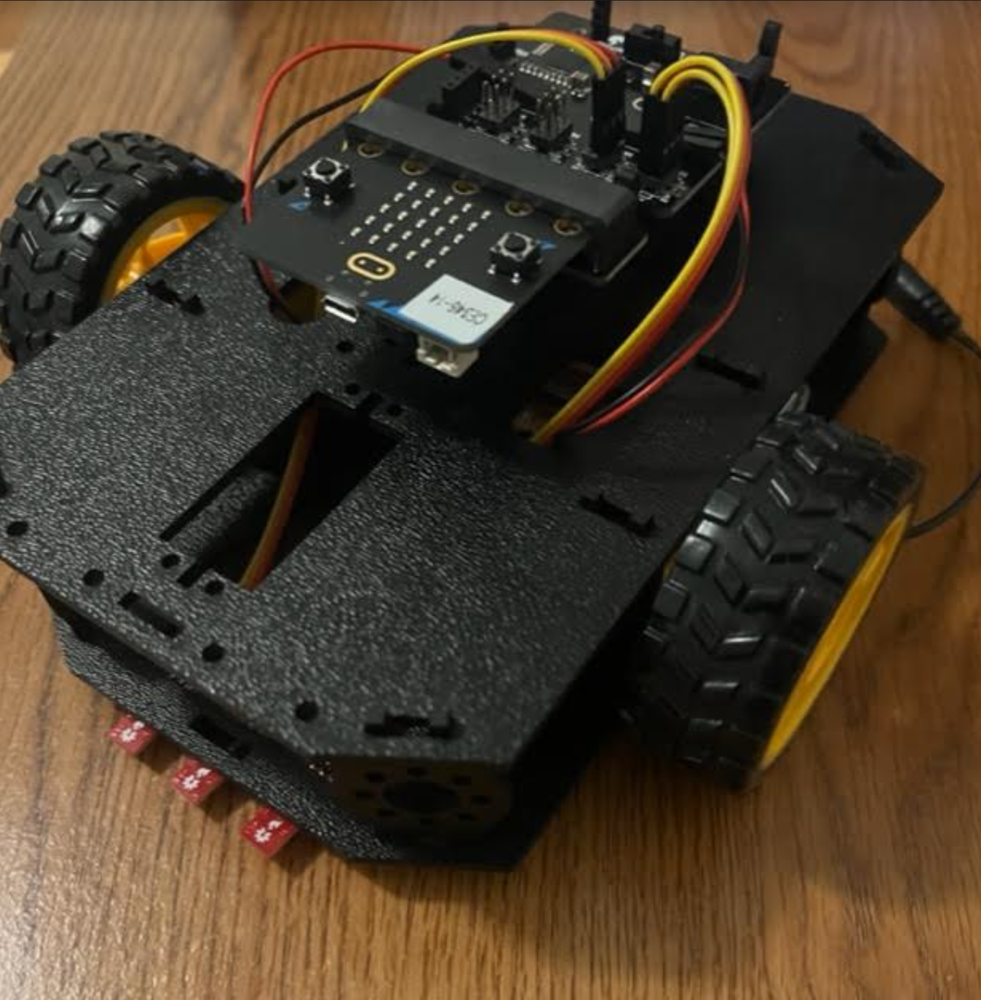

Projects
Bio
Resume
Contact
Projects
Factcheckr.io is a website that can be used to examine the validity of statements and uncover whether articles are fake news or not.

The guided robot uses color sensing to navigate. It can move through a track by following a black line on the ground.